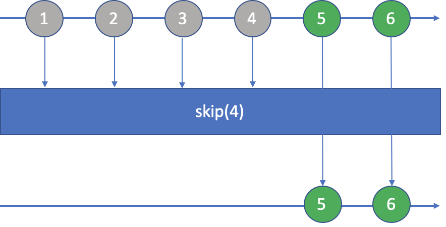
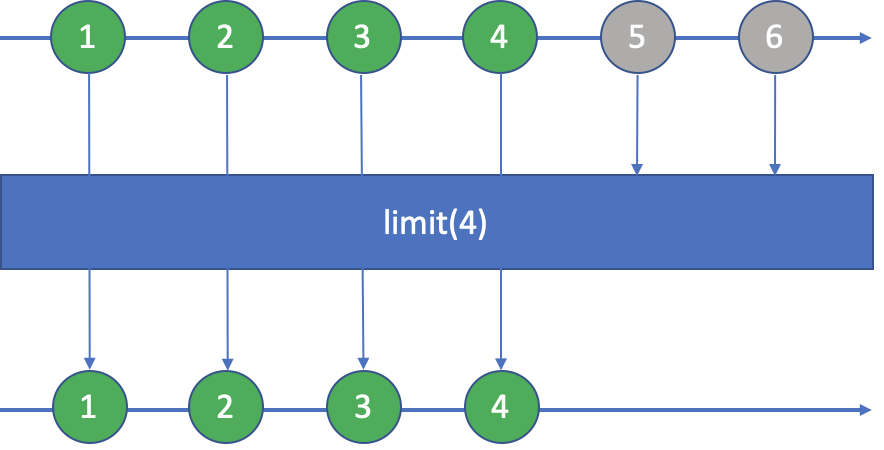

本文将讲解Java 8 Stream中的两个方法：skip()和limit()。这两个方法是Stream很常用的，不仅各自会被高频使用，还可以组合出现，并能实现一些小功能，如subList和分页等。
见名知义，skip()方法用于跳过前面n个元素，然后再返回新的流，如图所示：

来看看代码：
List<Integer> result = Stream.of(1, 2, 3, 4, 5, 6)
.skip(4)
.collect(Collectors.toList());
List<Integer> expected = asList(5, 6);
assertEquals(expected, result);方法skip()的参数n的四种情况：
（1）当n<0时，抛IllegalArgumentException异常；
（2）当n=0时，相当没有跳过任何元素，原封不动、完璧归赵；
（3）当0<n<length时，跳过n个元素后，返回含有剩下的元素的流；
（4）当n>=length时，跳过所有元素，返回空流。
对于limit()方法，它是用于限制流中元素的个数，即取前n个元素，返回新的流，如图所示：

代码如下：
List<Integer> result = Stream.of(1, 2, 3, 4, 5, 6)
.limit(4)
.collect(Collectors.toList());
List<Integer> expected = asList(1, 2, 3, 4);
assertEquals(expected, result);方法limit()的参数n的四种情况：
（1）当n<0时，抛IllegalArgumentException异常；
（2）当n=0时，不取元素，返回空流；
（3）当0<n<length时，取前n个元素，返回新的流；
（4）当n>=length时，取所有元素，原封不动、完璧归赵。
流Stream分为有限流和无限流，前面的例子我们都是使用的有限流，与Java集合类不同，流是可以无限的。对于无限流，skip()和limit()表现出了极大的差异，先上代码：
Stream.iterate(1, i -> i + 1)
.filter(num -> (num & (num - 1)) == 0)
.limit(10)
.forEach(System.out::println);
System.out.println("----------------");
Stream.iterate(1, i -> i + 1)
.filter(num -> (num & (num - 1)) == 0)
.skip(10)
.forEach(System.out::println);执行后发现，limit()是可以将无限流转化为有限流的，所以我们也可以认为它是一个短路操作。而skip()则不行，不管你跳过了前面多少个元素，总还是会有源源不断的元素过来，无法收敛。
上述代码的结果是：
通过limit()输出了前十个2的n次方值：
1, 2, 4, 8, 16, 32, 64, 128, 256, 512
而skip()跳过了前10个，继续输出，但会不断执行下去（会有int的溢出现象）：
1024, 2048, 4096, 8192, 16384, 32768...
除了两者各自有各自的功能外，我们通过组合使用，可以实现其它功能。
集合类如List是有subList()这个方法的，可以截取List中的某一部分，这个功能还可以通过组合skip()和limit()使用得到，如下面代码：
List<Integer> list = asList(1, 2, 3, 4, 5, 6, 7, 8, 9);
List<Integer> expected = list.subList(3, 7);
List<Integer> result = list.stream()
.skip(3)
.limit(7 - 3)
.collect(Collectors.toList());
assertEquals(expected, result);将subList(startIndex, endIndex)转换成skip(startIndex).limit(endIndex - startIndex)。
可以通过组合使用skip()和limit()进行分页，如下面代码：
int pageSize = 10;
int pageIndex = 7;
List<Integer> expected = asList(61, 62, 63, 64, 65, 66, 67, 68, 69, 70);
List<Integer> result = Stream.iterate(1, i -> i + 1)
.skip((pageIndex - 1) * pageSize)
.limit(pageSize)
.collect(Collectors.toList());
assertEquals(expected, result);上面代码例子是获取了第七页数据，每页大小为10。
本文介绍了Java 8的Stream接口中两个常用的方法：skip()和limit()，比较简单易懂，也介绍了怎么组合使用。需要注意的是，如果Stream过大或是无限流，小心skip()会有性能问题。
欢迎关注公众号<南瓜慢说>，将持续为你更新...
欢迎加博主微信，做一个点赞之友，哈哈...
多读书，多分享；多写作，多整理。